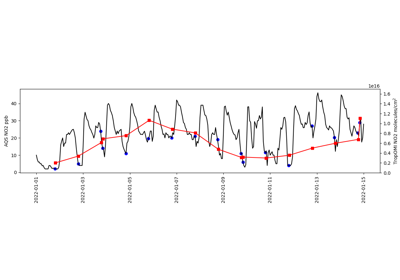
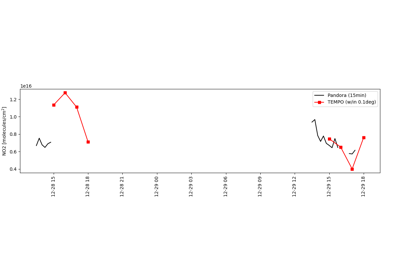

Timeseries examples¶
Examples showing timeseries analyses that illustrate the power of pyrsig.

El Paso AirNow vs TEMPO
NYC VIIRS AOD vs TropOMI NO2

Phoenix AQS vs TropOMI

Pittsburg Pandora vs TEMPO
Examples showing timeseries analyses that illustrate the power of pyrsig.